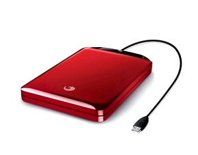

Покупка портативного или внешнего жесткого диска .

Вы решили приобрести внешний или переносной жесткий диск. Прежде чем делать это, ознакомьтесь с нашими советами. При выборе и покупке подобного типа винчестеров, существует огромное количество нюансов и
технических особенностей. Неудивительно, что в этом обилии специфической информации, неискушенному пользователю ПК сложно разобраться. В наших рекомендациях и советах мы подробно
рассмотрим несколько вопросов, с которыми Вы должны определиться, прежде чем отправитесь за покупкой
Прежде чем мы начнем, стоит определиться с терминологией. Итак, чем отличается внешний жесткий диск от портативного. Запомните! Внешний жесткий диск требует внешнего источника питания, в то время как портативный
винчестер «запитывается» только с вашего компьютера. Итак, если ваш диск должен быть подключен к розетке переменного тока, это внешний жесткий диск. Если этого не требуется, то он портативный. Внешний жесткий диск
часто оснащен вентилятором, что избавляет его от проблем с перегревом.
Недостатком является то, что вам нужна дополнительная розетка для доступа к данным.
Покупая винчестер, определитесь с тем, какой объем памяти необходимо иметь винчестеру, тем более если вам надо
купить компьютер в Минске. Портативные и внешние жесткие диски с большим объемом памяти обычно довольно дороги. Но не забывайте о том, что если емкость
приобретаемого винчестера в скором времени окажется исчерпанной, то покупка второго подобного девайса обойдется Вам значительно дороже того, как если бы Вы предусмотрительно приобрели винчестер с емкостью вдвое большей.
Давно известно, скупой платит дважды. Так что постарайтесь найти для себя оптимальный баланс между стоимостью и потребностями. Если вы не планируете активно использовать объемные файлы, занимающие гигабайты. Если вы не
скачиваете фильмы, не слушаете онлайн-музыку., Ваш компьютер используется как хранилище word- и excel-документов.
В таком случае смело останавливайте свой выбор на моделях с объемом 80Гб или 120Гб.
Теперь предположим, что вы заядлый потребитель информации. У Вас большая коллекция цифровой музыки, или, что еще круче, у вас целая видеотека с фильмами в формате HD. В этом случае стоит приобретать винчестер «на вырост».
Это позволит Вам сэкономить немалую сумму в долгосрочной перспективе
(которая, как показывает практика, часто оказывается ближайшей).
Что такое Get USB 3.0?
Get USB 3.0 (также называемый SuperSpeed USB 3.0 ), технология появившаяся сравнительно недавно. Последние модели компьютеров обычно поддерживают данную технологию, и она продолжает набирать популярность. Все портативные
и внешние жесткие USB 3.0 диски обратно совместимы с USB 2.0. Если вы собираетесь хранить на винчестере не только офисные документы,
но и что-то более объемное, то, пожалуй, стоит остановить свой выбор именно на моделях этого типа.
Ну и последний совет, если информация на винчестере представляет для вас какую-то ценность, то не забывайте обязательно делать резервное копирование.
Желательно чтобы оно выполнялось автоматически.
Покупка для этого внешних или портативных жестких дисков является важным шагом, но он будет бесполезен, если вы забываете им пользоваться. Наличие программы автоматического резервного копирования снимет с вас эту заботу,
и все сделает в определенное время, даже если вы об этом забудете. На первых порах стоит регулярно проверять,
что автоматическое резервное копирование работает корректно.
Читайте также:
Оперативная память.
Твердотельный SSD накопитель, преимущества и недостатки.
Следующая статья:
Как работает кеш-память процессора.